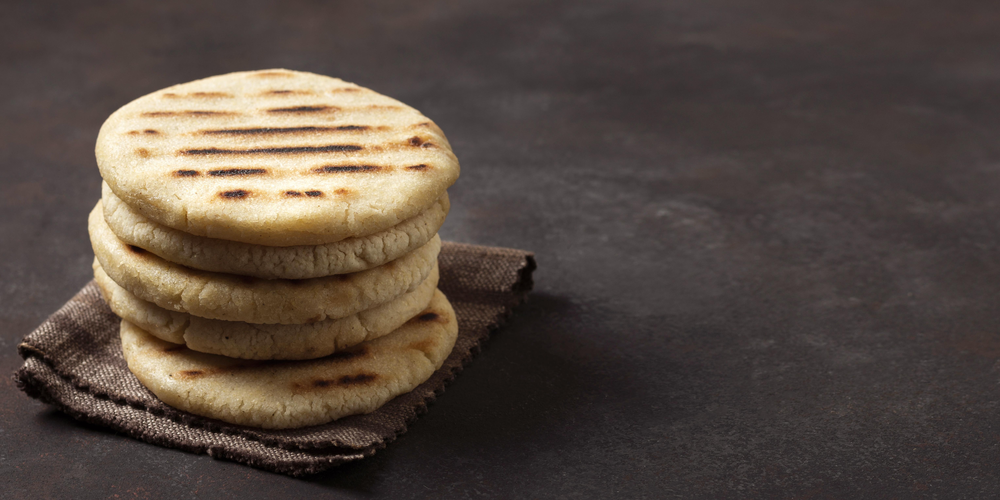

Arepa

Designed by Freepik
An arepa is a round, unleavened cake or patty made from ground maize (corn)
that is a staple food in Venezuela and Colombia, eaten with meals or as a snack.
They can be grilled, baked, or fried and are often split open and filled with a variety
of ingredients like cheese, butter, avocado, beans, or meat, resembling a savory sandwich or bread.
Ingredients
- 2 1/2 cups lukewarm water
- 1 teaspoon salt
- 2 cups pre-cooked white cornmeal
- 1/4 cup vegetable oil, or as needed
Steps
- Stir water and salt together in a medium bowl; gradually stir in cornmeal with your fingers until the mixture forms a soft, moist, malleable dough.
- Form dough into eight 2-inch diameter balls; pat each ball to flatten into a 3/8-inch-thick arepa patty.
- Heat oil in a large skillet over medium heat; fry arepas in batches until golden brown, about 4 to 5 minutes per side.
Transfer cooked arepas to a paper towel-lined plate to drain until cool enough to handle.
- Slice halfway through each arepa horizontally with a thin serrated knife to form a pita-like pocket.
- Enjoy!